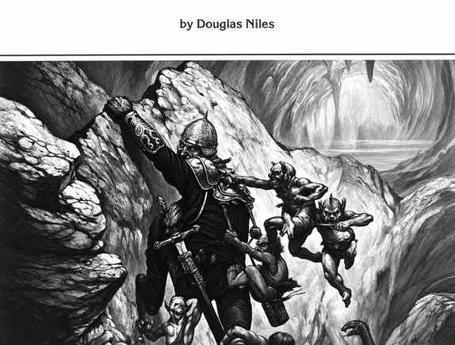

书名页、致谢与制作人员 · Title, Thanks, and Credits

《地城生存指南》 Douglas Niles 著
这是一本用于 AD&D 游戏、探索未知幽暗地域的地下城冒险资料书。原书由 TSR, Inc. 出版，1986 年版权归 TSR, Inc. 所有。
特别致谢
本书凝聚了许多人的努力。感谢 Harold Johnson 监督项目并进行细致审阅；Dave Sutherland 绘制三维地图，为地下世界增添新的维度；Frank Mentzer 提供丰富的游戏经验与建议；Zeb Cook 参与多次即兴创意讨论；Jon Pickens 始终愿意提出建议、意见与看法；Bruce Heard 花时间反复检验规则；Mary Elsbury Breault 的编辑工作提升了本书质量并使其按时完成。
制作人员
| 项目 | 人员 |
|---|---|
| 《地城生存指南》设计 | Douglas Niles |
| AD&D 游戏系统设计 | Gary Gygax |
| 编辑 | Mike Breault |
| 封面插图 | Jeff Easley |
| 内页插图 | Doug Chaffee、Greg Harper、Jim Roslof、Jeff Easley |
| 地图与图表 | Dave Sutherland |
| 排版 | Carolyn Vanderbilt |
| 校样与制版 | Coleen O’Malley、Gloria Szopinski |
原书还刊载了 Random House 的发行信息、TSR 英国分部信息及版权声明。